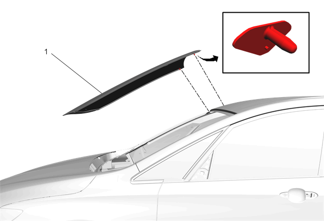

挡风玻璃的更换
- • BO-24402-A玻璃密封胶清除工具（刮刀）。
- • 拆卸车窗时，必需使用BO-39032固定车窗玻璃拆卸工具或等效的工具。
- • 使用符合上汽通用汽车公司规格的聚氨酯粘合剂系统
专用工具
当地同等工具：专用工具
拆卸程序
-
1.打开发动机舱盖。注意:在切下固定窗前，在涂漆表面和内部装饰件的周围贴上双层遮蔽带。
- 2.挡风玻璃刮水器臂 » 拆下 –挡风玻璃刮水器臂的更换
- 3.进气格栅板 » 拆下 –进气口格栅板的更换
- 4.车内后视镜 » 拆下 –车内后视镜的更换、车内后视镜的更换
- 5.{如装配}前视驾驶员信息摄像头 » 拆下 –前视驾驶员信息摄像头的更换
- 6.{如装配}前视驾驶员信息摄像头支架 » 拆下 –前视驾驶员信息摄像头支架的更换
-
7.保护下列部件不受破碎玻璃的影响：警告：如果碎裂的玻璃掉进除霜器出风口，可能被吹入乘客舱，造成人身伤害。
- • 上前围板垫
- • 除霜器出风口和空调出风口
- • 座椅和地毯
- 8.{如装备} 挡风玻璃下支架 @ 前罩板 » 拆下 。
-
 9.{如装备}使用合适的工具，从车窗中间开始，小心地来回切割饰条(1)的周围，以便接近聚氨酯胶条。警告：在处理任何带有锐棱或毛边的玻璃或钣金件时，应佩戴经认可的安全眼镜和手套以降低人身伤害的风险。
9.{如装备}使用合适的工具，从车窗中间开始，小心地来回切割饰条(1)的周围，以便接近聚氨酯胶条。警告：在处理任何带有锐棱或毛边的玻璃或钣金件时，应佩戴经认可的安全眼镜和手套以降低人身伤害的风险。 -
 10.使聚氨酯粘合剂与挡风玻璃分离。注意:保持工具的刃口紧靠车窗。
10.使聚氨酯粘合剂与挡风玻璃分离。注意:保持工具的刃口紧靠车窗。 - • 在夹焊凸缘留下一层聚氨酯底层。
- • 清水是唯一适用的润滑剂。
- • BO-24402-A玻璃密封胶清除工具（刮刀）。
- • 拆卸车窗时，必需使用BO-39032固定车窗玻璃拆卸工具或等效的工具。
-
11.在助手的帮助下，将挡风玻璃（1）从车辆上拆下。
安装程序
- 1.挡风玻璃 »安装 –挡风玻璃的粘合安装
- 2.{如装配}前视驾驶员信息摄像头支架 »安装 –前视驾驶员信息摄像头支架的更换
- 3.{如装配}前视驾驶员信息摄像头 »安装 –前视驾驶员信息摄像头的更换
- 4.车内后视镜»安装 –车内后视镜的更换、车内后视镜的更换
- 5.进气格栅板»安装 –进气口格栅板的更换
- 6.挡风玻璃刮水器臂»安装 –挡风玻璃刮水器臂的更换
- 7.关闭发动机舱盖。
- 8.拆下涂漆面周围的双层遮蔽带。